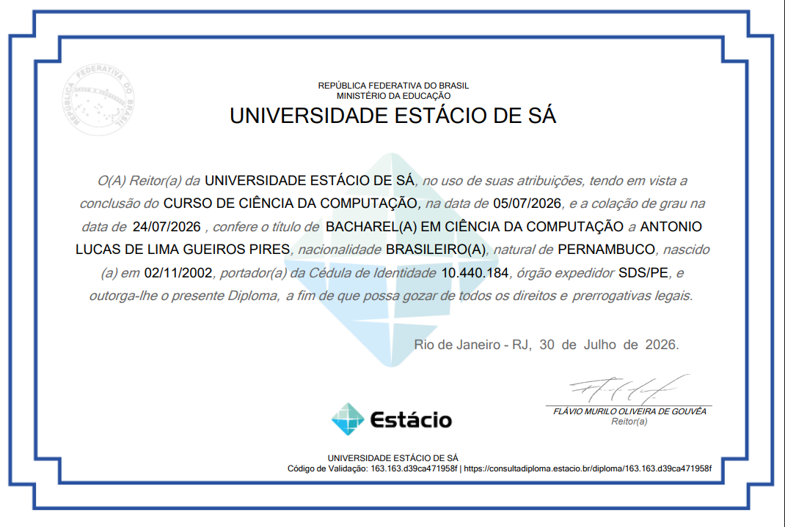

Sou um estudante de TI apaixonado por jogos e tecnologia. 🎮❤️
Tenho habilidades com front-end e back-end, fiz cursos de Harvard e sou formado em Ciência da Computação. Além disso sei Inglês e domino as linguagens Python, Java Script (além do HTML e CSS), React Native, C, C++, C# e Java, além de conhecimento em SQL! Estou estudando CRM´s, principalmente o Salesforce
E também sei mexer com artes digitais, modelagem 3D e moteres gráficos como a Unity!
Meu sonho é me tornar um desenvolvedor de jogos e criar jogos, apps e paginas iguais as que eu acessava desde pequeno.

Concluído em Julho de 2026
Acessar Diploma em PDF